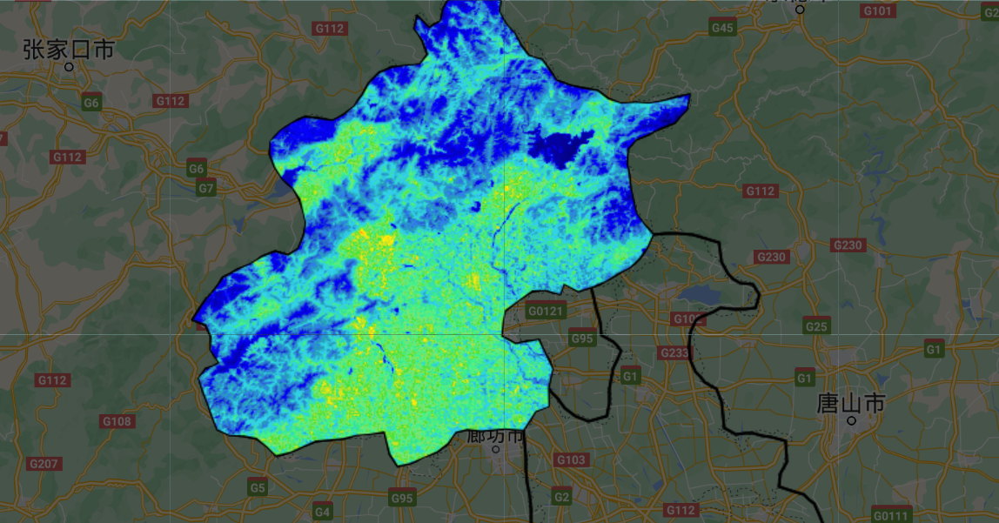
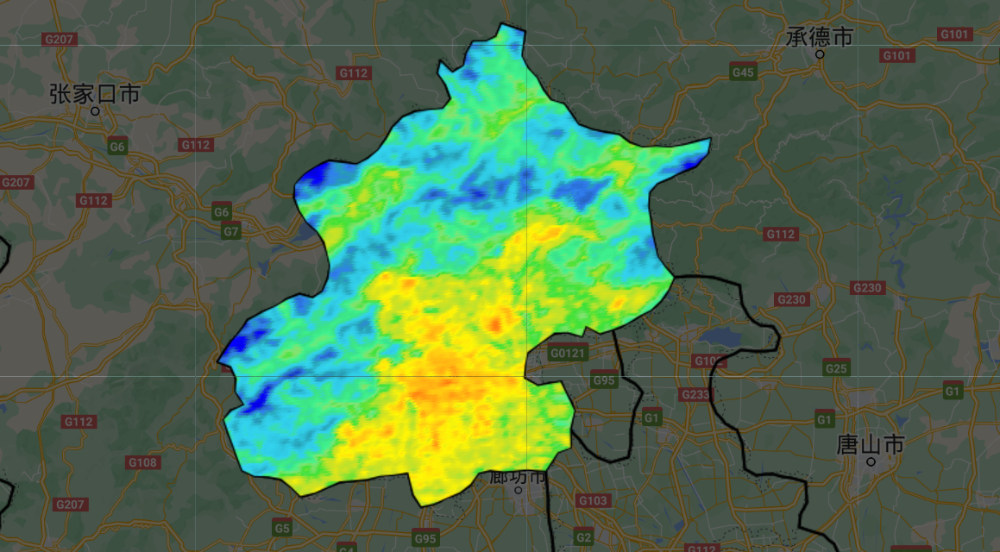
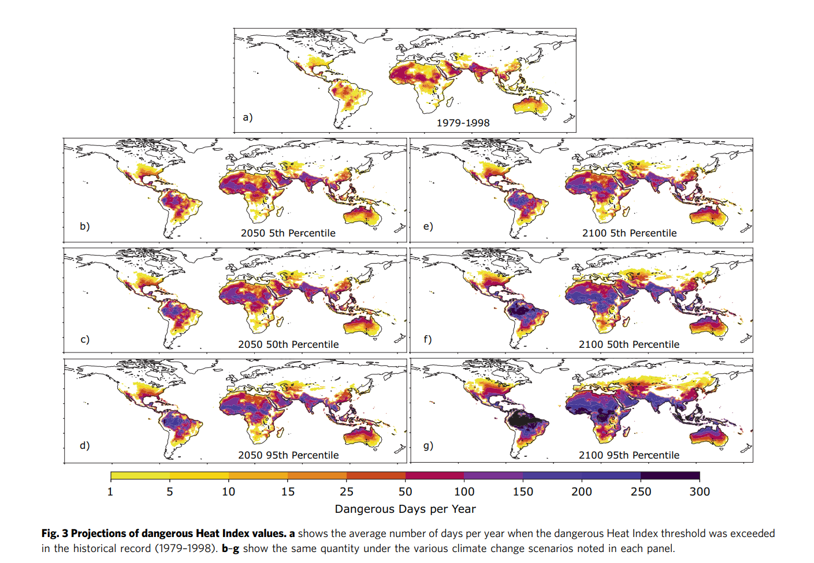

week8
This week, we learnt to explore temperatures in urban areas using two different data products; Landsat and MODIS!
1 Summary
1.1 Landsat
To obtain temperature data from Landsat images, we would typically use the thermal bands provided by the satellite. Landsat 8, for instance, has two thermal infrared (TIR) bands: Band 10 (10.60 - 11.19 µm) and Band 11 (11.50 - 12.51 µm). The process involves converting the digital numbers (DNs) from these bands into spectral radiance, then into brightness temperature using the calibration constants provided in the Landsat data. This approach allows for the estimation of land surface temperatures (LST), which can be crucial for various applications, including environmental monitoring and studying urban heat islands. Further processing may involve correcting for atmospheric effects and emissivity to improve accuracy.
But in this week’s practical we use B10, below is a temperature image of Beijing obtained from Landsat data.

1.2 MODIS
To obtain temperature data using MODIS, you typically utilize the Land Surface Temperature (LST) products, such as MOD11A1 for daily LST or MOD11A2 for 8-day LST averages. These products offer measurements in Kelvin and cover both day and night times, leveraging the thermal infrared sensors on the MODIS instrument aboard the Terra and Aqua satellites. Processing includes converting digital numbers into brightness temperatures, factoring in emissivity adjustments for more accurate surface temperature readings. This data is valuable for a wide range of applications, from climate studies to agricultural monitoring.
The following is the temperature image of Beijing obtained by MODIS.

1.3 others
The real benefit of MODIS data is that we can plot the time series, however in doing so we lose the spatial element. In addition to this, we can use both Landsat and MODIS to analyse Statistics per spatial unit and Trend analysis.
2 Application
2.1 LST
In addition to traditional applications, the integration of Landsat and MODIS is more innovative. For example, the study of Hazaymeh, K. & Hassan, Q. K. (2015) focused on improving the temporal resolution of Landsat-8 Land Surface Temperature (LST) images by fusing them with MODIS data, a new approach called Spatio-Temporal Image Fusion Model (STI-FM) was developed. Implemented over a heterogeneous semi-arid region in Jordan, the Middle East, the study establishes linear relationships between two consecutive MODIS 8-day composite LST images and a Landsat-8 LST image to predict a synthetic Landsat-8 LST image at a future time point. The method showed strong linear relationships between consecutive MODIS LST images and high agreement between synthetic and actual Landsat-8 LST images through both qualitative and quantitative evaluations. This innovative approach could significantly benefit satellite systems with similar spectral and orbital configurations and is applicable across various ecosystems beyond semi-arid areas.
2.2 Heat index
About the heat index，I found a interesting article called “Probabilistic projections of increased heat stress driven by climate change”, which presents an analysis on how the heat index might change with global warming, applying the Rothfusz equation to historical data and various climate change scenarios(Vargas Zeppetello, L.R., Raftery, A.E. & Battisti, D.S., 2022).

3 Personal Reflection
The stark realities that these themes reveal about the future of our planet are not only an academic exercise, but also a much-needed litmus test for climate action. LST data from Landsat and MODIS are tools that provide invaluable insights into the state of the Earth’s surface, highlighting a fundamental aspect of the planet’s health. Understanding the thermal characteristics of different land covers, from cities to forests, allows us to understand the complex interactions between the surface and the atmosphere. This knowledge is critical for a variety of applications such as urban planning, agriculture and climate science, and provides a lens through which to observe the direct impacts of land-use change and urbanisation on local climate.
What struck me most was the interconnectedness of these issues. lST and heat indices are more than just temperature indicators; they are indicators of human well-being, economic stability, and ecological balance. Recognising that these challenges are looming in my lifetime and will have an even more serious impact on future generations, I call for action. It underscores the urgency of adopting sustainable practices, advocating for effective climate policies, and supporting the scientific research that guides these efforts.
As I reflect on these lessons, I am motivated not by despair, but by the clarity of purpose they provide. Understanding the mechanisms of global warming and the consequences of inaction provides clear guidance for change. It reminds us that science and knowledge are our best tools for creating a sustainable future. The task ahead is daunting, but the path is clear: we must use our understanding of surface temperatures, heat indices and other climate-related indicators to mitigate the effects of climate change and adapt to its inevitable impacts. The time to act is now; the future of our planet and the well-being of all its inhabitants depend on it.